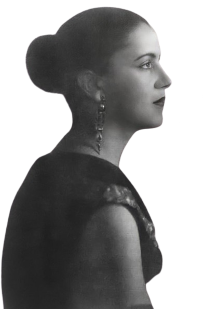
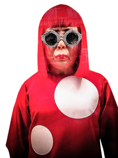
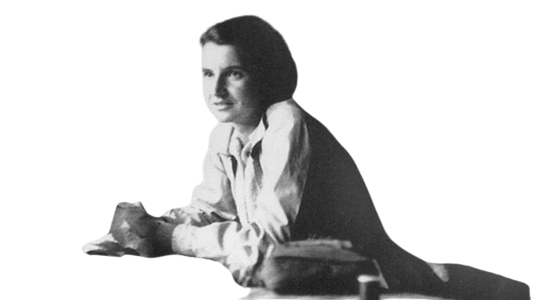
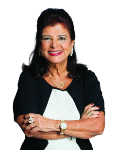
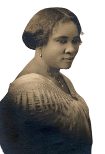
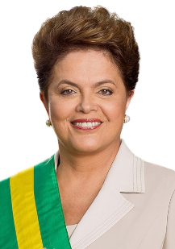
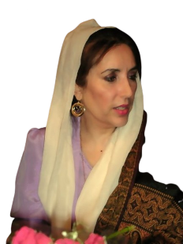

🎨 Arte
Tarsila do Amaral
Uma das figuras mais importantes da arte moderna no Brasil, Tarsila do Amaral foi pioneira do movimento modernista no país. Suas pinturas muitas vezes retratam elementos da cultura brasileira, como paisagens, pessoas e folclore, em cores vibrantes e formas geométricas, contribuindo significativamente para a construção de uma identidade artística nacional.
Veja a página do autor, Domínio público, via Wikimedia Commons.Yayoi Kusama
Uma das artistas contemporâneas mais influentes, Yayoi Kusama é conhecida por suas instalações de arte, esculturas e pinturas que exploram padrões repetitivos e a interação entre o espectador e o ambiente artístico. Ela é particularmente famosa por suas obras com padrões de pontos, que se tornaram sua marca registrada.
Garry Knight, CC BY 2.0, via Wikimedia Commons.🔬 Ciência
Mayana Zatz
Geneticista brasileira reconhecida por seu trabalho pioneiro em genética humana e biologia molecular. Ela é uma das principais pesquisadoras no estudo de distrofias musculares e doenças genéticas no Brasil, além de ser uma defensora da ciência e da educação científica no país.
CPFL Cultura, CC BY 2.0, via Wikimedia Commons.Rosalind Franklin
Biofísica britânica cujas contribuições fundamentais para a compreensão da estrutura do DNA foram essenciais para a descoberta da estrutura de dupla hélice. Seu trabalho foi crucial para o trabalho de Watson e Crick, embora muitas vezes não seja devidamente reconhecido.
CSHL, CC BY-SA 4.0, via Wikimedia Commons.🏅 Esportes
Naomi Osaka

Filha de mãe japonesa e pai haitiano, Naomi Osaka ganhou destaque em 2016. Aos 19 anos, recebeu o prêmio de Revelação do Ano da WTA. E isso foi apenas o começo.
Veja mais Imagem de: Olympics - Naomi OsakaRayssa Leal

Rayssa Leal nasceu em 4 de janeiro de 2008, em Imperatriz, no Maranhão. Aos 16 anos, com 1,47m de altura, ganhou fama através de vídeos virais. Um clipe dela realizando uma manobra em um lance de escadas enquanto vestia um tutu azul brilhante explodiu nas redes sociais quando ela tinha apenas 7 anos.
Veja mais Imagem de: Olympics - Rayssa Leal📚 Literatura
Clarice Lispector

Clarice Lispector (1920-1977) foi um dos maiores nomes da literatura brasileira do Século XX. Com seu romance inovador e com sua linguagem altamente poética, sua obra se destacou diante dos modelos narrativos tradicionais. Seu primeiro livro, “Perto do Coração Selvagem”, recebeu o Prêmio Graça Aranha.
Embaixada da Ucrânia no Brasil, Domínio público, via Wikimedia Commons.Anne Frank

Anne Frank (1929-1945), jovem judia vítima do nazismo, faleceu em Bergen-Belsen, Alemanha. Seu diário, "O Diário de Anne Frank", foi publicado por seu pai, sobrevivente de Auschwitz, Polônia.
Fotógrafo desconhecido, Domínio público, via Wikimedia Commons.💼 Negócios
Luiza Helena Trajano Inácio Rodrigues
Luiza Helena Trajano Inácio Rodrigues (Franca, São Paulo, 9 de outubro de 1948) é uma empresária brasileira que atuou como CEO a rede de lojas de varejo Magazine Luiza e outras empresas integradas a sua holding até 2015, passando a atuar desde então como presidente do Conselho de Administração. Em 2021 foi listada pela revista Time como uma das 100 mulheres mais influentes do mundo.
Magazine Luiza - Magalu, CC BY 2.0, via Wikimedia CommonsMadam C. J. Walker
Madam C. J. Walker, foi uma empreendedora americana, filantropa e ativista política e social. Ela é registrada como a primeira mulher que se tornou milionária nos Estados Unidos no Guinness Book of World Records. Várias fontes mencionam que, embora outras mulheres possam ter sido as primeiras, sua riqueza não é tão bem documentada.
Scurlock Studio (Washington, D.C.) (photographers)., Public domain, via Wikimedia Commons🏛️ Política
Dilma Rousseff
Ex-presidente do Brasil, servindo dois mandatos (2011-2016). Foi a primeira mulher a ocupar a presidência do Brasil. Durante seu governo, enfrentou desafios econômicos e políticos, incluindo protestos em massa e um processo de impeachment.
Roberto Stuckert Filho/Presidência da República, CC BY 3.0 BR, via Wikimedia CommonsBenazir Bhutto
Ex-primeira-ministra do Paquistão, servindo duas vezes (1988-1990 e 1993-1996). Foi a primeira mulher a liderar um governo em um país muçulmano de maioria sunita e desempenhou um papel importante na política do Paquistão até seu assassinato em 2007.
Original: User:IFaqeerEdit:, CC BY-SA 3.0, via Wikimedia Commons